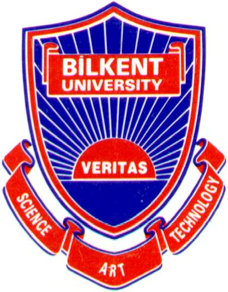

Last updated in March, 2016
Ergun Biçici
Researcher in Computer Science and Engineering
PhD in Computer Engineering,
Department of Computer Engineering
,
Koç University
E-mail:
Education:

Publications
Code & Data
Research
Blog
Bookmarks
Photos
Turkish Word of the Day
Research Projects:
Referential Translation Machines for Performance Prediction and Improved Statistical Machine Translation, 2015-2016
Previous:
QTLeap: Quality Translation by Deep Language Engineering Approaches, 2015-2016
European Union project funded by FP7 program.
Monolingual and Bilingual Text Quality Judgments with Translation Performance Prediction, 2014-2015
SFI project funded by Technology Innovation Development Award (TIDA).
Large Scale Experiments on Machine Translation Performance Prediction for High Quality Machine Translation, 2014-2015
Large Scale Experiments on the Prediction of Machine Translation Performance, 2012-2014
QTLaunchPad: Preparation and Launch of a Large-Scale Action for Quality Translation Technology, 2012-2014
European Union project funded by FP7 program.
Research Interests:
Machine Learning
Sparse learning, Transductive and active learning, Regression, Clustering.
Machine Translation
Language modeling, Natural language processing, Computational linguistics.
Semantic Understanding
Text analytics and understanding, Computational semantics.
Artificial Intelligence
Commonsense reasoning.
News:
You can check out my new book:
"The Regression Model of Machine Translation"
. (November, 2011)
PhD Thesis:
"The Regression Model of Machine Translation"
.
I finished my PhD. (September, 2011)